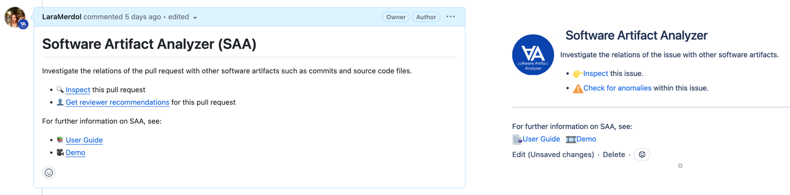
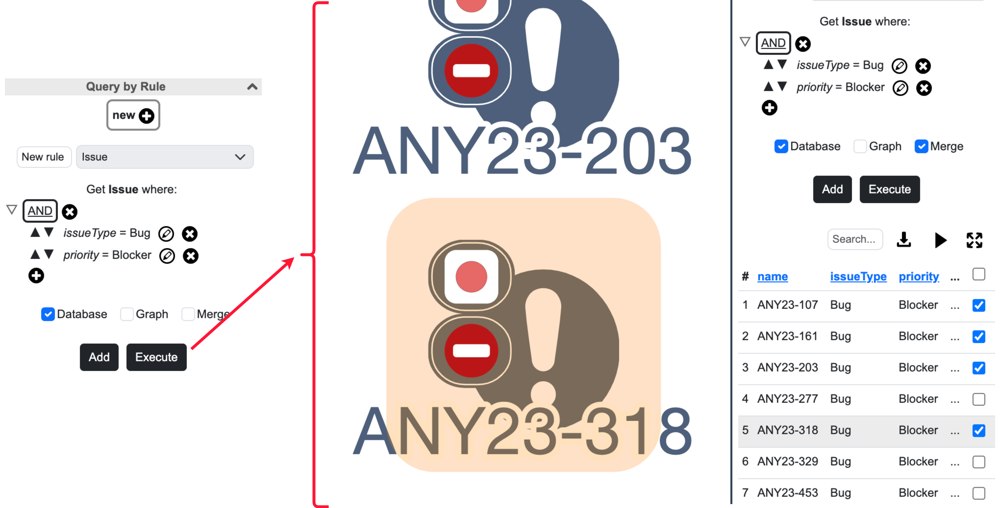
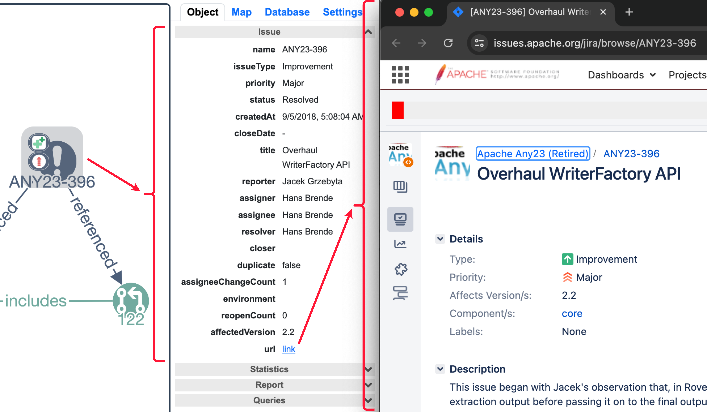
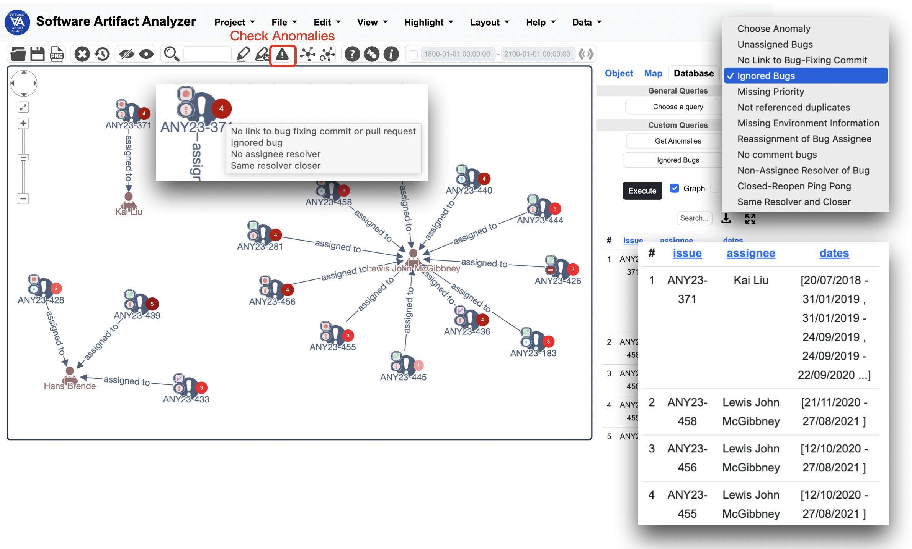
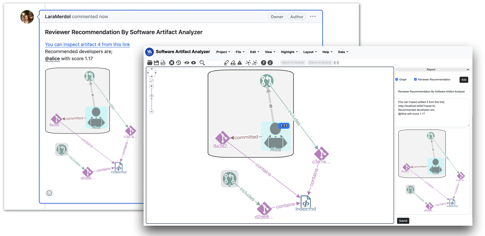

Features
Software Artifact Analyzer (SAA) was designed to visually analyze a software's artifact traceability graph to gain insight into the development process and improve it [1].
Initial artifact traceability graph of interest
Assuming they agreed to create landing comments, users may initiate their analysis through the links in the associated comment of an issue tracking tool such as GitHub or Jira. 
Alternatively, a user may launch SAA with a specific artifact or developer in the URL. For instance,
http://saa.cs.bilkent.edu.tr/?name=ANY23-245
launches SAA with the issue named ANY23-245 and other artifacts/developers that it is directly in relation
with.
Furthermore, SAA may be started with an empty drawing canvas and a query may be constructed. A query might be an SQL-like query (e.g., all issues with a type of bug and priority of equal) or a more advanced graph-based query (e.g., any files that developers all A, B and C contributed to).
Once a "landing" artifact traceability graph of interest is somehow formed, it may be further extended through additional queries or via context menus of artifacts in the graph.
The context menus are specific to each node type, allowing users to perform operations tailored to that specific software artifact or developer. For instance, one might be interested in finding any source code files modified by a particular pull request, followed by author(s) of the related commit from the context menu of that pull request as exemplified below.
Inspecting graph content
By selecting an artifact or developer or a relation among them, you may get detailed information about that entity or the relationship through object inspectors. When applicable, the inspector will link the artifact to associated any GitHub or Jira page. 
Complexity management through grouping
SAA facilitates the grouping of nodes either manually or automatically based on topology or developers, enhancing analysis and reducing complexity. Below is an example of a traceability graph grouped by developer.

SAA hosts some readily available software analytic methods described below to illustrate how such methods may be integrated into the framework quickly.
Reviewer recommendation
Utilizing the RSTrace+ algorithm [2], SAA assists in making reviewer assignments, offering
a visual representation of analysis results to boost confidence in decision-making.

Users can customize their view by choosing the number of recommendations to display and incorporating a recency factor for calculation. The table results furnish a list of recommended reviewers, each accompanied by their respective scores. The graph results provide the choice to display the graph either clustered by recommended developers or not.
Expert recommendation
A similar technique to the RSTrace+ algorithm can also be used to identify experts or suitable developers on a specific source code file or a group of such files.
Bug tracking process anomaly detection
SAA detects a high number of types of bug-tracking process anomalies, as categorized by Qamar et al. in [3], contributing to process evaluation and anomaly prevention. 
Visual cues on each issue aid in quickly identifying issues with higher number of anomalies, with the tooltips summarizing the type of anomalies detected.
Integration with issue tracking tools
SAA allows users to report analysis results or observations directly on GitHub or Jira platforms, promoting seamless integration and practicality. Users can submit reports as comments under pull requests in GitHub or as comments under issues in Jira, enhancing collaboration and communication. 
This empowers developers with the ability to detect anomalies, make informed decisions, and collaborate effectively within the context of their software projects.
References
[1] L. Merdol, E. Tüzün and U. Dogrusoz, "SAA: a framework for improving the software development process via visualization-based software analytics", under review, 2024.
[2] E. Sülün, E. Tüzün, and U. Doğrusöz, “RSTrace+: Reviewer suggestion using software artifact traceability graphs,” Information and Software Technology, vol. 130, p. 106455, 2021.
[3] K. A. Qamar, E. Sülün, and E. Tüzün, “Taxonomy of bug tracking process smells: Perceptions of practitioners and an empirical analysis,” Information and Software Technology, vol. 150, p. 106972, 2022. doi:10.1016/j.infsof.2022.106972